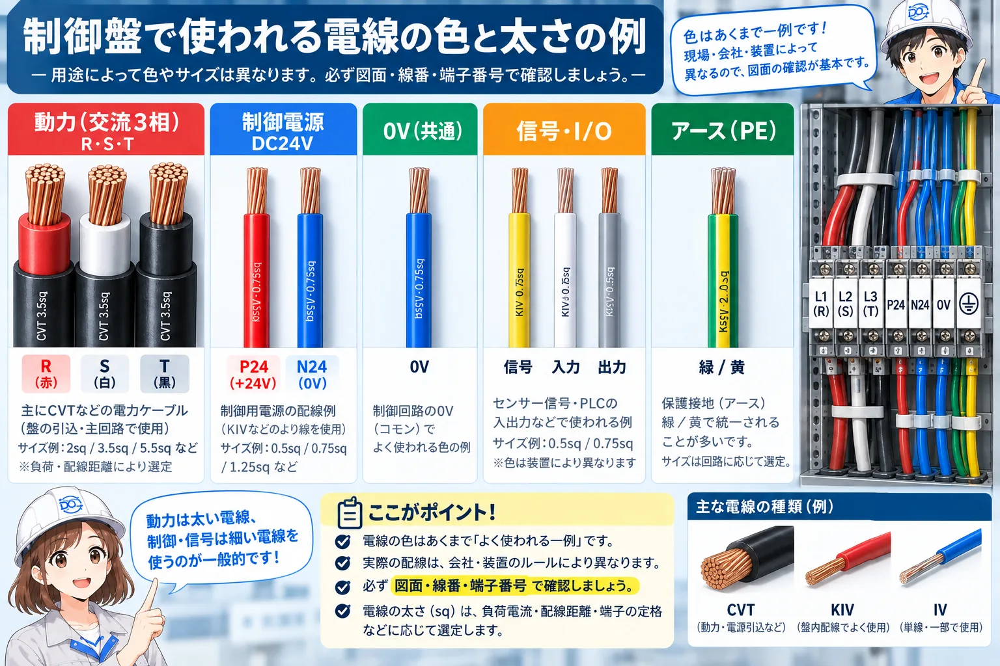
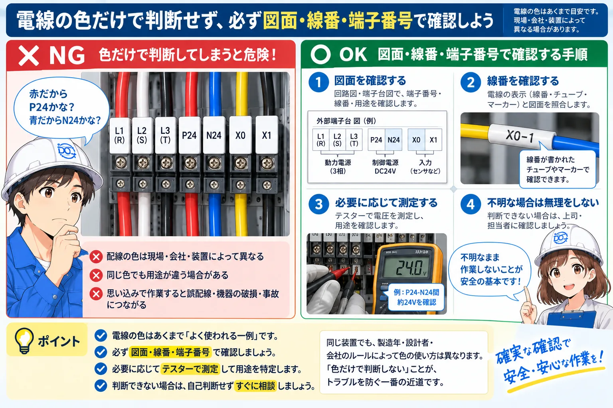
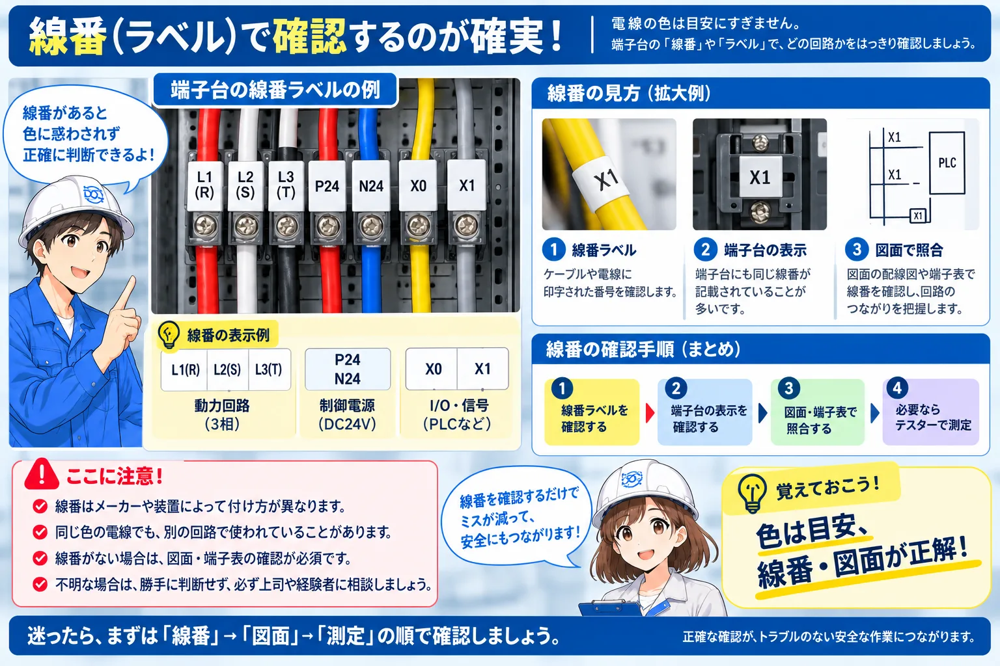

制御盤の配線色・電線色とは
制御盤では、電線の色を使って回路の種類や役割を見分けやすくすることがあります。たとえば、三相動力、DC24V制御、0V、PLC I/O、保護接地などを色で大まかに見分けられるようにする考え方です。
ただし、色の使い方は会社・設備・設計ルール・改造履歴で変わります。そのため「赤だから必ずP24」「青だから必ず0V」のように、色だけで用途や電圧を断定するのは避けます。
現場では、色で見当を付けたあとに線番端子番号図面を照合します。必要な場合に限り、作業手順と安全を確認して測定します。
まずはこう覚える
色は「入口」、線番と図面が「答え合わせ」です。画像の色分けや線径も、絶対的なルールではなく理解のための代表例として見てください。

先輩色を見ると候補は絞れる。でも、最後は線番と図面で確認する。この順番なら思い込みを減らせるよ。

後輩「この色だから決まり」ではなく、「この色ならまずこの回路を疑う」くらいなんですね。
配線色と電線の太さはどう見る？

画像では、三相動力の例として L1(R)・L2(S)・L3(T) を赤・白・黒、DC24V制御の例としてP24とN24、0V、PLC I/O、PEを並べています。ここで大切なのは「この色が全国共通の絶対ルール」という意味ではないことです。
線の太さも同じです。画像では、動力側に2sq・3.5sq・5.5sqなど、制御電源に0.5sq・0.75sq・1.25sq、信号・I/Oに0.3sq・0.5sq・0.75sqなどのイメージを示しています。負荷電流、配線長、周囲温度、端子の定格、保護機器、社内標準などに応じて選定します。
CVT・KIV・IVも用途で使い分ける
電源引込や主回路では太い電力ケーブル、盤内の制御配線では比較的細いより線を使う場面が多くなります。画像はその「太さの差」を理解するための例です。
色で見当
まず回路の種類を推測するための手がかりにします。
線番で特定
マークチューブ・端子番号で対象回路を絞ります。
図面で確認
回路図・端子表と実物が一致するか確認します。
なぜ電線を色分けするのか
制御盤の中には多くの電線があります。すべて同じ色だと、どれが動力で、どれが制御電源や信号なのかを見つけるまでに時間がかかります。
色分けされていると、配線確認・I/Oチェック・改造・トラブル対応で目的の線を探す手がかりになります。ただし、色分けは作業を速くする補助情報であって、回路を確定する情報ではありません。
| 見たいもの | 色分けが役立つ理由 | 現場での確認 |
|---|---|---|
| 三相動力 | 主回路を見つけやすい | L1/L2/L3・R/S/T、保護機器、図面を確認 |
| DC24V制御 | P24・N24・0V系統を追いやすい | 電源端子、線番、電圧、回路図を確認 |
| PE・接地 | 接地へ向かう線を見つけやすい | PE端子、盤本体、機器の接地端子を確認 |
| 信号・I/O | センサやPLC配線を追いやすい | X/Y番号、端子番号、線番と照合 |
色だけで判断する場合と、図面で照合する場合

たとえば、赤線を見て「P24だろう」、青線を見て「N24や0Vだろう」と考えることは、最初の仮説としては使えます。しかし、そのまま作業を進めるのは危険です。
過去の改造、応急対応、メーカーや会社ごとのルールによって、同じ色が別用途に使われている場合があります。そこで、線番 → 端子番号 → 図面まで一致しているか確認し、必要な場合だけ測定します。
画像の24.0Vは「DC24V回路の測定例」
画像内のテスター表示は、P24-N24間などを確認する場面の一例です。測定箇所・レンジ・作業可否は対象設備の手順に従ってください。
配線色を手がかりに配線を追う流れ

実際に配線を追うときは、最初から色だけで答えを決めません。「色で見当を付ける → 線番を見る → 端子番号・図面で照合する」という順番にすると、判断の根拠が残ります。
1. 色で見当を付ける
動力、制御電源、0V、信号、PEなどの可能性を考えます。
2. 線番を見る
マークチューブや線番表示を確認して対象線を絞ります。
3. 端子番号・図面と照合
端子台、機器名、I/O番号、回路図が一致するか確認します。
4. 必要なら測定
作業手順と安全を確認したうえで、必要な電圧・導通を確認します。
先輩色で探して、線番で絞って、図面で確定する。これを習慣にすると配線を追いやすくなるよ。
後輩色は最初のヒント。最終確認は実物の表示と図面なんですね。
現場で見るときのポイント
最初に、その盤で採用されているルールを確認します。図面の凡例・注記、端子台の表示、既存配線の傾向を見ると、その設備での色の使い方が見えてきます。
次に改造跡を確認します。増設や応急対応では、元の色ルールと違う電線が使われることがあります。色に違和感があったら、線番や図面更新履歴まで確認します。
また、電線サイズも見ます。動力線が制御線より太く見えることは多いですが、太さだけで回路を決めつけないことも大切です。端子定格や負荷条件に合わせて選定されているかを確認します。
ここを覚える
色・太さ・配線ルートは全部「ヒント」です。線番・端子番号・図面を組み合わせて、複数の根拠で判断します。
まとめ：配線色は便利な目印。でも最後は図面と線番
制御盤の配線色は、回路の種類や役割を見つけるための便利な目印です。三相動力、DC24V、0V、信号、PEなどを見分ける入口として役立ちます。
一方で、色や線径は現場・会社・装置によって変わります。画像に出てくる赤・白・黒、P24/N24、各sqは代表例として理解し、実際の作業では図面、線番、端子番号、必要な測定を組み合わせて確認してください。
この記事の結論
色で見当 → 線番で特定 → 図面で照合 → 必要なら測定。この順番で考えると、配線色を便利に使いながら思い込みを減らせます。
参考にした日本語の公式資料
この記事では、色や電線サイズを一律の決まりとして断定しないために、国内の規格案内とメーカー公式情報を確認しています。
盤内配線用絶縁電線の種類、被覆の色別、配線方式を扱う規格の公式案内です。
JEMA公式ページを見る端子台ごとに適用できる電線範囲が異なることを確認するために参照しています。
オムロン公式ページを見るU/V/Wと赤・白・黒の組み合わせが製品ごとの具体例であることを確認する参考として使用しています。
オリエンタルモーター公式FAQを見るこの記事は役に立ちましたか？
今後の記事づくりの参考にします。どちらかを選ぶだけで回答できます。
回答は匿名で集計し、個人情報の入力はありません。
関連記事
配線色は、線番・端子台・PLC I/O・接地とセットで見ると、実際の配線を追いやすくなります。